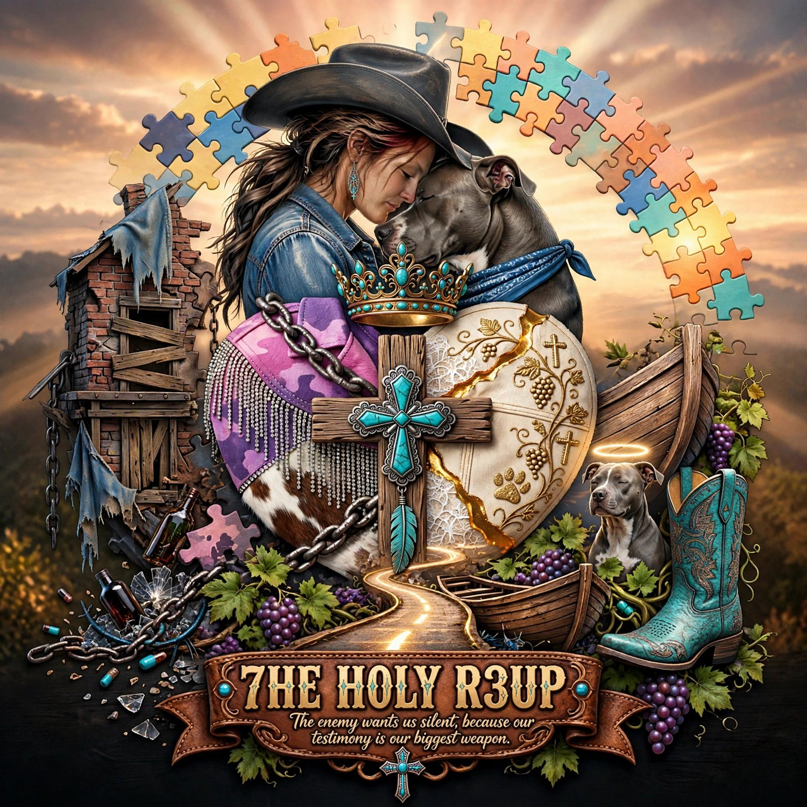
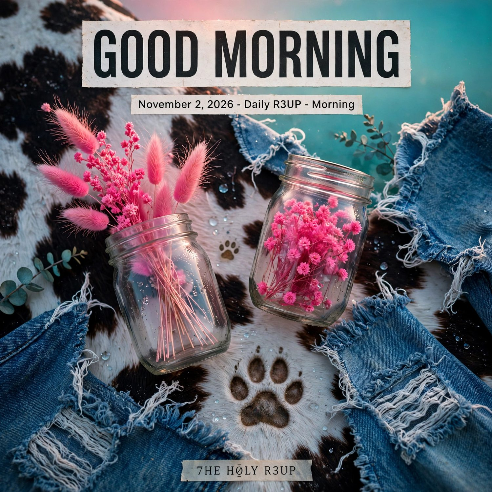
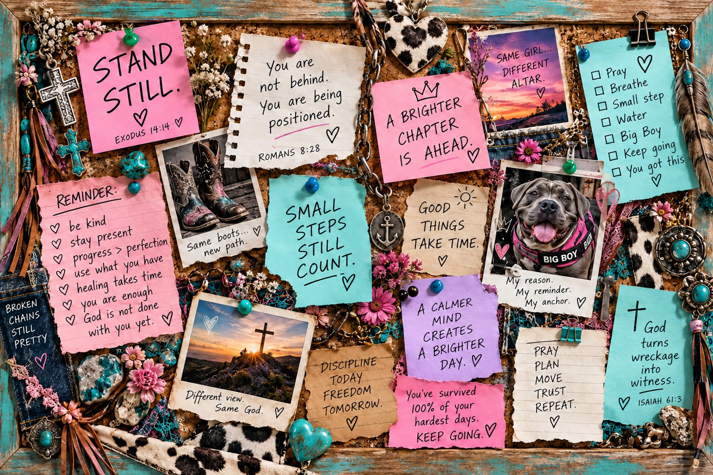
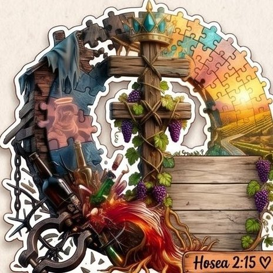
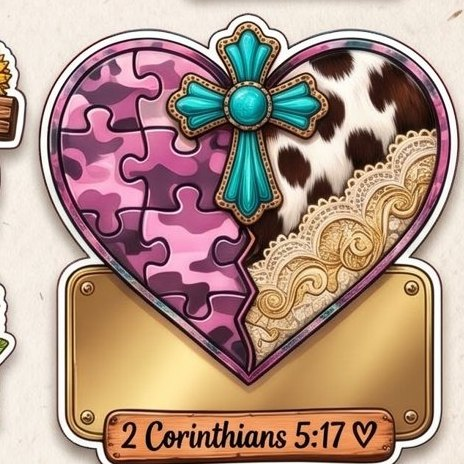
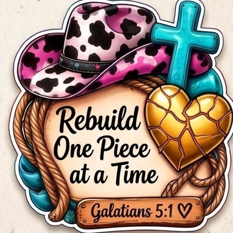

7HE H0LY R3UP
YOU SURVIVED. NOW WE REBUILD.
THE R3NEW
30 days · 30 languages · one word: again

November 2026 Content Calendar + Outline
A daily interactive series for the family: Morning drop + R3NEW post, each day building on the last, every day able to stand alone.
Big Boy approved. God Almighty gets the glory.
Welcome to the R3NEW
“Renew ain't 'new.' Renew is 'again,' on purpose, scars and all.”
November is the R3NEW. Every day for 30 days, one language gives us its word for renew, a different meaning, a different definition, and a fun fact you didn't see coming. Then we drop one real, low-energy step you can do in 10 minutes or less.
I'm not here to be above anybody. I'm beside you. Same rebuild, different rooms. The family does this together, in the comments, one brick at a time.
What makes this different
- Each day builds on the one before. Every post starts with a mini recap (“Yesterday: ___. Today builds: ___.”) so new people can hop in and old people feel the climb.
- Every day also stands alone. Each post carries a one-line “Start here” catch-up. Nobody's ever behind. You are being positioned, not behind.
- Two posts a day, two jobs. The Daily R3UP · Morning drop teaches the word. The separate R3NEW post is the interactive one: comment, vote, say it back, tag your crew.
- The Jar. Every day the family drops a Jar word. Every Sunday is a Jar Reveal: I read yours out loud, raw, with thanks.
- The Wall. Each day adds one brick to the R3NEW Wall graphic. By Nov 30 the wall is built, with 30 words in 30 tongues.
- Thanksgiving voice. Gratitude for mercy already completed, not “almost there.” Gratitude and grief can sit at the same table.
Honest disclaimer. This series is faith-based education, personal testimony and encouragement. It is not medical, mental-health or legal advice and it doesn't diagnose or treat anything. Struggling isn't weak faith. If you're in crisis or thinking about hurting yourself, call or text 988 (US) or your local emergency number. Scripture references are listed by book, chapter and verse; before posting, quote from your Ethiopian Orthodox Tewahedo edition and name the edition and translator on the graphic. Psalm numbers follow the Ge'ez/Septuagint tradition and can run one number behind Hebrew-numbered Bibles. Language pronunciations are friendly approximations. Ask a native speaker, a deacon or a priest to confirm. Copyright © 2026 7HE H0LY R3UP. All rights reserved.
How Each Day Works

Morning graphic: swap in the day's word + date
1 · Daily R3UP · Morning (teach)
- Mini recap (2 lines): “Yesterday: ___ (language) meant ___. Today builds: ___.”
- Start-here line: “Joining late? Renew = making new again. That's all you need.”
- Hook in my voice (real struggle, short punchy sentences).
- The word: script, sound, meaning, explanation, fun fact.
- Word of God: exact book, chapter and verse. Church teaching, Scripture, history, testimony and metaphor kept separate.
- Verify it: search the word, compare two sources, ask a native speaker or clergy.
2 · R3NEW post (interact)
- One simple action: comment a word, vote, fill in a blank, say it back, tag a crew member.
- A 10-minute step, plus a low-energy option and a no-cost, private option.
- Reply to as many comments as possible in the first hour. Pin the best Jar word.
The caption blueprint (every post)
1. Hook (specific, real) → 2. Mini recap + start-here line → 3. Teaching + evidence-backed context → 4. Interactive ask → 5. 10-minute step (and low-energy option) → 6. Verification invite: “Check both sides, including mine. Read the sources. Truth can withstand honest questions.” → 7. Invitation → 8. Signature closing.
Standard Bio
“I'm Nikki, founder of 7HE H0LY R3UP, a survivor rebuilding through faith, with Big Boy, my American Bully service dog, beside me. I share lived experience, carefully sourced teaching, and practical steps for the next stretch of rebuilding.”
Standard Invitation
“If this meets you where you are, reach out through this page. Share only what feels safe. What step are you working on?”
Signature Closing
“We survived. Now let's go back, with truth and a hand out. Souls are attached to my obedience. God Almighty gets the glory.”
Grounding invitation (optional, top of Morning post)
“If it's okay for you: feet on the floor, one slow breath in, one out. Eyes open or closed, your call. Skip this if it doesn't feel good today. You're still welcome here.”
Hashtag set
#7HEH0LYR3UP · #THER3NEW · #YouSurvivedNowWeRebuild · #BigBoy
November 2026 · 30 Languages
THE R3NEW
Color bar = arc. ■ Roots · ■ Rise · ■ Repair · ■ Return + Thanks · ■ Every Tongue.
🫙 Jar Reveal = Sunday read-aloud of the week's Jar words.
* ◆ Wed/Fri are traditional fast days in the Ethiopian Orthodox Tewahedo Church. Food fasting isn't for everyone (health, history with food, pregnancy). Ask your priest. Low-energy option: fast from scrolling for one hour.
Ethiopian-calendar notes (Hidar 1 = Nov 10, Hidar 12 = Nov 21, Hidar 21 = Nov 30) follow the standard conversion for 2026. Confirm feast days with your church calendar.
The Roadmap: What's To Come

The Wall starts as a corkboard. By Nov 30 it's a wall of 30 bricks.

Arc 1 · ROOTS · Nov 1–7
Where the word 'new' comes from. Dig up the roots.
Languages: English, Latin, Greek, Hebrew, Ge'ez, Amharic, Arabic
Arc 2 · RISE · Nov 8–14
Revive, rebuild, and don't do it alone.
Languages: Swahili, Yoruba, Zulu, Spanish, French, Italian, German

Arc 3 · REPAIR · Nov 15–21
Gold in the cracks. Daily washing. Plain words.
Languages: Japanese, Mandarin, Korean, Hindi, Sanskrit, Persian, Turkish
Arc 4 · RETURN + THANKS · Nov 22–28
Languages that came back from the edge. Thanks for mercy already done.
Languages: Māori, Tagalog, Irish, Welsh, Hawaiian, Russian, Vietnamese

Arc 5 · EVERY TONGUE · Nov 29–30
Curious, hungry, and finished. Thirty words, one wall.
Languages: Swedish, Every Tongue
Weekly rhythm. Sundays: Jar Reveal + arc recap. Mon–Sat: one word, one fact, one step. Wed + Fri: lighter posts (fast days; fewer words, more prayer). Day 20 plants a sprout jar. Day 25 is the check-in. Day 26 is Thanksgiving. Day 29 opens the Q+A. Day 30 reveals the whole Wall.
Arc 1 · ROOTS Nov 1–7
Where the word 'new' comes from. Dig up the roots.
DAY 01Sun · NOV 1Jar Reveal
English
renew
ree-NOO
/rɪˈnjuː/
Means: to make new again; to begin again; to restore
“Renew ain't 'new.' Renew is 'again,' on purpose, scars and all.”
What it means
'Re' means again. 'New' means new. Renew does not erase the old. You renew a vow, a license, a lease, a strength. Same thing, made fresh, on purpose.
Fun fact
'News' is just 'new things.' And 'new' shares one ancestor with Latin novus, Greek néos and Sanskrit náva, a root linguists call Proto-Indo-European *néwos.
Word of God
Lamentations 3:22-23
Mini recap · builds on yesterday
Kickoff. Day 1 has nothing to recap. That's the point. We lay the first board.
R3NEW interactive post
DROP YOUR JAR WORD. One word for something God already renewed in you. Comment it. It goes in the Jar all month.
10-minute step (low-energy option included)
Write your Jar word on paper and put it where you will see it. Low energy: type it in your Notes app.
Don't take my word for it: search the word + “etymology,” compare two sources, ask a native speaker.
DAY 02Mon · NOV 2
Latin
renovare
reh-noh-WAH-reh
from novus = new
Means: to make new again (renovatio = a making-new-again)
“Latin gave us the root. I'm giving you the receipts: novus. New. Now go find it.”
What it means
Novus is the root under renovate, innovate, novel, novice and nova. The Vulgate calls the person in Christ a 'nova creatura,' a new creation (2 Cor 5:17).
Fun fact
In 1573 Tycho Brahe published a book about a 'new star' (stella nova) that blazed in the sky in 1572. Astronomers still call a sudden flare a nova.
Word of God
2 Corinthians 5:17
Mini recap · builds on yesterday
Yesterday: renew = 'again' + 'new.' Today we dig up the 'new' root.
R3NEW interactive post
WORD HUNT. Find a word in your house or phone with 'nov' or 'new' in it (novel, novice, renovate, news). Comment your find.
10-minute step (low-energy option included)
Wipe down one surface you've been ignoring. 10 minutes max. A tiny renovation counts.
Don't take my word for it: search the word + “etymology,” compare two sources, ask a native speaker.
Arc 1 · ROOTS Nov 1–7
Where the word 'new' comes from. Dig up the roots.
DAY 03Tue · NOV 3
Greek
ἀνακαίνωσις
an-ah-KAI-no-sis
anakaínōsis
Means: renewal; a making new in quality
“Greek has two words for new. One's a baby. One's a whole different quality. Guess which one I'm after.”
What it means
Greek has two 'new' words. Néos means new in time, just born. Kainós means new in kind, fresh in quality. Paul says 'be transformed by the renewing (anakainōsis) of your mind.'
Fun fact
In the whole New Testament, anakaínōsis shows up only twice: Romans 12:2 and Titus 3:5.
Word of God
Romans 12:2
Mini recap · builds on yesterday
Yesterday: Latin novus. Today: Greek splits 'new' into two kinds.
R3NEW interactive post
THIS OR THAT (Stories poll). Néos: a brand-new start? Or kainós: same life, new quality? Vote and tell us why.
10-minute step (low-energy option included)
Write one thought that keeps replaying and one true thing to put next to it. This is not praying it away. It's making room.
Don't take my word for it: search the word + “etymology,” compare two sources, ask a native speaker.
DAY 04Wed · NOV 4Wed/Fri fast day*
Hebrew
לְחַדֵּשׁ
le-khah-DESH
lechadésh = to renew
Means: to renew; חָדָשׁ (chadásh) = new
“The moon goes dark and comes back. They named the MONTH after it. Renewal ain't weird. It's the calendar.”
What it means
Same root as chódesh (חֹדֶשׁ), which means month and new moon. The moon goes dark and returns, so a month is literally a renewal. Lamentations 5:21: 'Renew our days as of old.'
Fun fact
Isaiah 40:31 says they 'renew' strength using the verb chalaf (חָלַף), which literally means to swap or exchange. Renewal can be a trade.
Word of God
Lamentations 5:21 · Isaiah 40:31
Mini recap · builds on yesterday
Yesterday: two kinds of new. Today: Hebrew ties renewal to the moon, the month and the swap.
R3NEW interactive post
SWAP IT. Fill in the blank: 'I'm trading ___ for ___.' Comment yours. Share only what feels safe.
10-minute step (low-energy option included)
Write your swap on a sticky note. Low energy: say it out loud once.
Don't take my word for it: search the word + “etymology,” compare two sources, ask a native speaker.
Arc 1 · ROOTS Nov 1–7
Where the word 'new' comes from. Dig up the roots.
DAY 05Thu · NOV 5
Ge'ez
ሐደሰ
had-DAH-seh
ḥaddasa (approx.)
Means: to be new; to renew. ሐዲስ (ḥaddis) = new
“This is the language my church still prays in. Older than most of what's on your feed.”
What it means
Ge'ez is the ancient liturgical language of the Ethiopian Orthodox Tewahedo Church. ሐዲስ ኪዳን (Ḥaddis Kidan) is the New Covenant, the New Testament. Our church still prays in this language.
Fun fact
The Garima Gospels, Ge'ez gospel books kept at Abuna Garima monastery in Tigray, have been radiocarbon dated to roughly the 4th-7th centuries, among the oldest illuminated Christian books known.
Word of God
Revelation 21:5
Mini recap · builds on yesterday
Yesterday: Hebrew roots of 'new.' Today: our own church language, Ge'ez.
R3NEW interactive post
SAY IT BACK. Record 10 seconds: 'ḥaddasa' and your Jar word. Post it, tag us. We'll feature the family.
10-minute step (low-energy option included)
Read Revelation 21:1-5 slowly one time (about 3 minutes). Circle every 'new.'
Don't take my word for it: search the word + “etymology,” compare two sources, ask a native speaker.
DAY 06Fri · NOV 6Wed/Fri fast day*
Amharic
ማደስ
mah-DESS
madés (approx.)
Means: to renew, to renovate. እድሳት (edsát) = renewal. አዲስ (addis) = new
“Addis Ababa means 'new flower.' A whole city named after something that just bloomed.”
What it means
Addis Ababa, አዲስ አበባ, means 'new flower.' A whole capital city named for something that just bloomed. The Ethiopian calendar has 13 months, and Enkutatash, the Ethiopian New Year, lands around September 11.
Fun fact
Addis Ababa was founded in the 1880s, and its name means 'new flower.' Renewal that blooms is still renewal that has roots.
Word of God
Isaiah 43:19
Mini recap · builds on yesterday
Yesterday: Ge'ez ḥaddasa. Today: the Amharic cousin, and a city named 'new flower.'
R3NEW interactive post
NAME YOUR FLOWER. Finish it: 'God is growing a new ___ in me.' Comment it.
10-minute step (low-energy option included)
Water a plant, or look at a picture of a flower for 2 minutes and thank God for one thing that bloomed.
Don't take my word for it: search the word + “etymology,” compare two sources, ask a native speaker.
Arc 1 · ROOTS Nov 1–7
Where the word 'new' comes from. Dig up the roots.
Arc 2 · RISE Nov 8–14
Revive, rebuild, and don't do it alone.
DAY 07Sat · NOV 7
Arabic
تجديد
tahj-DEED
tajdīd
Means: renewal. جديد (jadīd) = new
“Same family tree, different branch. Three languages, one root: new.”
What it means
Arabic builds words on three-letter roots. J-D-D gives jadīd (new) and tajdīd (making new). Hebrew chadásh and Ge'ez ḥaddis come from a related Semitic root family. Cousins, not twins.
Fun fact
Linguists link Hebrew ḥadásh, Ge'ez ḥaddis and Arabic ḥadīth (حديث, 'new, recent') to the same ancient root family. One word, three neighbors, thousands of years.
Word of God
Ezekiel 36:26
Mini recap · builds on yesterday
Yesterday: Ethiopia's languages. Today: the Semitic cousins. Arabic sits beside Hebrew and Ge'ez.
R3NEW interactive post
COUSIN CHECK. What languages did your family speak? Drop 'em in the comments. Let's find the cousins.
10-minute step (low-energy option included)
Text one family member: 'How do you say new in grandma's language?' Honoring the word, not borrowing anyone's religion.
Don't take my word for it: search the word + “etymology,” compare two sources, ask a native speaker.
DAY 08Sun · NOV 8Jar Reveal
Swahili
kuhuisha
koo-hoo-ee-SHA
kuhuisha
Means: to revive, to bring back to life. -pya = new, upya = anew
“Eagle days and sparrow days. Both count. Both got fed.”
What it means
Huisha comes from the idea of giving life. Kuanza upya means 'to begin anew.' Mwaka mpya is 'new year.'
Fun fact
Swahili is spoken across East Africa by well over 100 million people as a first or second language and carries many Arabic loanwords. A bridge language.
Word of God
Psalm 103:5 (102:5 in Ge'ez/Septuagint numbering)
Mini recap · builds on yesterday
Week 1 recap: roots of 'new.' Today we head to East Africa: revive.
R3NEW interactive post
PICK YOUR BIRD. Eagle (soaring), sparrow (hanging on) or egg (still forming)? Vote in Stories. JAR REVEAL: Week 1 Jar words read out loud.
10-minute step (low-energy option included)
Go stand outside or at a window for 5 minutes. Name 3 things you can see. Thank God for one.
Don't take my word for it: search the word + “etymology,” compare two sources, ask a native speaker.
Arc 2 · RISE Nov 8–14
Revive, rebuild, and don't do it alone.
DAY 09Mon · NOV 9
Yoruba
àtúnbí
ah-TOON-bee
tuntun = new
Means: reborn. tuntun = new. àtúnṣe = to repair, to adjust
“Names carry stories. Yours too. Let's talk about what yours is growing into.”
What it means
'Àtún-' is a prefix that means again. Yoruba is tonal, so the little marks change the meaning. Our faith says rebirth is in Christ (Titus 3:5), not reincarnation.
Fun fact
Names like Babatúndé ('father returns') and Yétúndé ('mother returns') are traditionally given to babies born after a grandparent has passed. That's a cultural naming tradition. We honor the language.
Word of God
Titus 3:5
Mini recap · builds on yesterday
Yesterday: kuhuisha, revive. Today: 'tún,' doing it again, with a name.
R3NEW interactive post
NAME STORY. Drop the meaning of your name, or the name you're growing into.
10-minute step (low-energy option included)
Look up your name's meaning. Write one thing you want God to renew in it.
Don't take my word for it: search the word + “etymology,” compare two sources, ask a native speaker.
DAY 10Tue · NOV 10Hidar 1
Zulu
ukuvuselela
oo-koo-voo-seh-LEH-lah
ukuvuselela
Means: to revive, to refresh, to renew
“Nobody rebuilds a wall by themselves. Nehemiah had a crew. 52 days. You got a crew too.”
What it means
Zulu is a Bantu language with click consonants (c, q, x). 'Ubuntu' means 'a person is a person through other people.' Renewal is a team sport.
Fun fact
Nehemiah's crew rebuilt Jerusalem's wall in 52 days (Neh 6:15). They didn't start with a perfect plan. They started with 'Let us rise up and build.'
Word of God
Nehemiah 2:18 · 6:15
Mini recap · builds on yesterday
Yesterday: new names. Today: new walls. Nobody rebuilds alone.
R3NEW interactive post
WALL CREW. Tag one person who helped you rebuild. They get a 🫙 in the replies.
10-minute step (low-energy option included)
Send one thank-you text. Three sentences max.
Don't take my word for it: search the word + “etymology,” compare two sources, ask a native speaker.
Arc 2 · RISE Nov 8–14
Revive, rebuild, and don't do it alone.
DAY 11Wed · NOV 11Wed/Fri fast day*
Spanish
renovar
rreh-noh-BAR
renacer = to be reborn
Means: to renew. renacer = to be reborn (nacer = to be born)
“Twelve grapes. Twelve months. Twelve chances to say thank you before the year hits you.”
What it means
Renovar is renew. Renacer is 'be born again,' re-nacer. Año Nuevo is New Year. Jesus says the branch that stays in the vine bears fruit (John 15:5).
Fun fact
In Spain, people eat 12 grapes at midnight on New Year's Eve, one for each chime and one for each month ahead (las doce uvas). Grapes. Vines. Our brand's got a lot of grapes.
Word of God
John 15:5
Mini recap · builds on yesterday
Yesterday: crew. Today: the thanks that keeps a crew going. Twelve grapes.
R3NEW interactive post
12-GRAPE THANKS. Name up to 12 small things God has already renewed. Even 3 counts. Jar time.
10-minute step (low-energy option included)
Write your 3 (or 12) on a card. Low energy: say them in the shower.
Don't take my word for it: search the word + “etymology,” compare two sources, ask a native speaker.
DAY 12Thu · NOV 12
French
renouveler
ruh-noo-vuh-LAY
renouveau = renewal
Means: to renew. renouveau = renewal. renaissance = re + naissance = rebirth
“Renaissance. You've said it a hundred times. It means 'rebirth.' Mind blown, Sunday school.”
What it means
'Renaissance' is just French for 'rebirth.' The age of art and learning (14th-17th c.) was named that by people looking back. The name got popular in the 1800s.
Fun fact
You've said 'Renaissance' a hundred times and never heard 'rebirth.' Ezekiel 37 gives the picture: dry bones, breath, standing back up.
Word of God
Ezekiel 37:5
Mini recap · builds on yesterday
Yesterday: 12 thank-yous. Today: what looking back on rebuilding is called. Rebirth.
R3NEW interactive post
REBIRTH REMIX. 'I used to ___. Now I ___.' One sentence. Share only what feels safe.
10-minute step (low-energy option included)
Write your sentence. Read it out loud once. That's your 10 minutes.
Don't take my word for it: search the word + “etymology,” compare two sources, ask a native speaker.
Arc 2 · RISE Nov 8–14
Revive, rebuild, and don't do it alone.
DAY 13Fri · NOV 13Wed/Fri fast day*
Italian
rinnovare
reen-noh-VAH-reh
rinascita = rebirth
Means: to renew. rinascita = rebirth. Rinascimento = Renaissance
“Locusts ate the years. God said 'I'll restore them.' I'm still reading that one slow.”
What it means
Giorgio Vasari used 'rinascita' (rebirth) in his 1550 Lives of the Artists to describe art coming back to life. The word stuck.
Fun fact
Joel 2:25: 'I will restore to you the years the locusts have eaten.' Restoration doesn't mean the damage didn't happen. It means God's still working.
Word of God
Joel 2:25
Mini recap · builds on yesterday
Yesterday: rebirth. Today: what gets restored after the damage.
R3NEW interactive post
LOCUST LETTER. 'God is restoring the ___ the locusts ate.' Share what you're comfortable with.
10-minute step (low-energy option included)
Pick one area. Write one small restore step for this week. No promises on the timeline.
Don't take my word for it: search the word + “etymology,” compare two sources, ask a native speaker.
DAY 14Sat · NOV 14
German
Wiederaufbau
VEE-der-owf-bow
erneuern = to renew
Means: rebuilding (wieder = again + Aufbau = building up). erneuern = to renew
“Wiederaufbau. Say it with me: again-build. Brick, then brick.”
What it means
German glues words together. Neu + Anfang = Neuanfang (new start). Wieder + Aufbau = Wiederaufbau, the word for rebuilding after destruction.
Fun fact
Wiederaufbau became the word for reconstruction after World War II. Isaiah 61:4: 'They shall rebuild the ancient ruins.'
Word of God
Isaiah 61:4
Mini recap · builds on yesterday
Yesterday: restoration. Today: the practical part. Rebuild, brick by brick.
R3NEW interactive post
BUILD-A-WORD. German glues words. Make up your own compound word for your season (Grit-Grace-Gold). Comment it.
10-minute step (low-energy option included)
Draw one brick on paper. Write on it the one thing you'll build this week. JAR REVEAL: Week 2 Jar words.
Don't take my word for it: search the word + “etymology,” compare two sources, ask a native speaker.
Arc 3 · REPAIR Nov 15–21
Gold in the cracks. Daily washing. Plain words.
DAY 15Sun · NOV 15Jar Reveal
Japanese
金継ぎ
kin-TSOO-gee
kintsugi = gold joinery
Means: repair with gold. 更新 (kōshin) = renewal. 再生 (saisei) = rebirth
“My heart's got a gold seam. Yours can too. Nobody throws away gold.”
What it means
Kintsugi mends broken pottery with lacquer and powdered gold so the crack becomes the feature. The practice is traditionally traced to the 1400s.
Fun fact
The Ise Grand Shrine is ritually rebuilt every 20 years, a custom said to go back about 1,300 years. Rebuilding on schedule, on purpose.
Word of God
Psalm 34:18 (33:19 in Septuagint/Vulgate numbering)
Mini recap · builds on yesterday
Week 2 recap: rise and rebuild. Today: repairing what broke. Gold in the cracks.
R3NEW interactive post
GOLD SEAM. Describe one crack in your story you're asking God to gild. Share only what feels safe. Honoring scars, never glorifying harm.
10-minute step (low-energy option included)
Mend one small thing (tape, glue, button). Say a thank-you while you do.
Don't take my word for it: search the word + “etymology,” compare two sources, ask a native speaker.
DAY 16Mon · NOV 16
Mandarin
日日新
rr-rr SHIN
rì rì xīn = new every day
Means: new every day. 焕然一新 = completely made new. 更新 (gēngxīn) = renew, update
“'Wash daily' hits different when the bathtub has scripture on it.”
What it means
The classic Great Learning (Daxue) quotes an inscription said to be on King Tang's bathing basin: 苟日新 日日新 又日新. 'If you can renew yourself one day, do so every day, and again each day.'
Fun fact
更新 uses the same characters in Chinese and Japanese. In Chinese it means both renew and update. Your phone has been 'renewing' all along.
Word of God
2 Corinthians 4:16
Mini recap · builds on yesterday
Yesterday: gold seams. Today: the daily wash. Repair is repeated.
R3NEW interactive post
DAILY BASIN. What's the one daily thing that resets you? (shower, coffee, prayer, walk). Comment it.
10-minute step (low-energy option included)
Do your daily reset on purpose today, slow, and notice it.
Don't take my word for it: search the word + “etymology,” compare two sources, ask a native speaker.
Arc 3 · REPAIR Nov 15–21
Gold in the cracks. Daily washing. Plain words.
DAY 17Tue · NOV 17
Korean
새롭게 하다
seh-ROP-geh hah-dah
saeropge hada
Means: to make new. 갱신 (gaengsin) = renewal, as in renewing a contract
“A whole alphabet built so regular people could read. That's the kind of renew I'm into.”
What it means
Gaengsin uses the same Chinese-origin characters as Japanese kōshin (更新). Korean also has the native phrase saeropge hada, 'to make it new.'
Fun fact
Hangul was created in 1443 under King Sejong and published in 1446, designed so ordinary people, not only scholars, could learn to read quickly. A writing system rebuilt for everybody.
Word of God
Habakkuk 2:2
Mini recap · builds on yesterday
Yesterday: daily renewal. Today: renewal made plain enough for everyone.
R3NEW interactive post
MAKE IT PLAIN. Explain your faith or your rebuild in 10 words or fewer. Best ones get featured.
10-minute step (low-energy option included)
Write your 10 words. Cut one word. Keep it plain.
Don't take my word for it: search the word + “etymology,” compare two sources, ask a native speaker.
DAY 18Wed · NOV 18Wed/Fri fast day*
Hindi
नवीनीकरण
nah-VEE-nee-kah-ran
navīnīkaraṇ
Means: renewal. नया (nayā) = new. नव (nav) = new
“'Nav' is 'new' AND 'nine.' Tiny word. Big fresh-start energy.”
What it means
In Sanskrit-based words, nava means 'new' and, as a separate word, nava also means 'nine.' Navratri is 'nine nights.' Little word, double life.
Fun fact
Hindi uses Devanagari script, written with a line across the top. नया कदम (nayā kadam) means 'new step.'
Word of God
Psalm 51:10 (50:10 in Ge'ez/Septuagint numbering)
Mini recap · builds on yesterday
Yesterday: plain language. Today: one tiny word, nav, and a next step.
R3NEW interactive post
NAYA KADAM. Drop your next tiny step in the comments. Just one.
10-minute step (low-energy option included)
Take that step. Under 10 minutes. Low energy version: do the first 2 minutes.
Don't take my word for it: search the word + “etymology,” compare two sources, ask a native speaker.
Arc 3 · REPAIR Nov 15–21
Gold in the cracks. Daily washing. Plain words.
DAY 19Thu · NOV 19
Sanskrit
पुनर्नवा
poo-nar-NAH-vah
punarnavā
Means: 'renewed again.' punar = again + nava = new
“Cut it down, it sprouts again. Not dramatic. Just botany. Just God.”
What it means
Punarnavā is the name of a plant, Boerhavia diffusa. It dries back in the dry season and greens up again with the rains. Its name literally says 'again-new.' (This is language, not medical advice.)
Fun fact
Job 14:7: 'There is hope for a tree: if it's cut down, it will sprout again.' Not dramatic. Just botany. Just God.
Word of God
Job 14:7
Mini recap · builds on yesterday
Yesterday: nine/new. Today: 'again-new,' a plant that sprouts back.
R3NEW interactive post
RAINY SEASON. What was your 'rain,' the thing that helped you turn green again? Comment it.
10-minute step (low-energy option included)
Step outside and find one green thing. Thank God for it.
Don't take my word for it: search the word + “etymology,” compare two sources, ask a native speaker.
DAY 20Fri · NOV 20Wed/Fri fast day*
Persian
نوروز
no-ROOZ
Nowruz = new day
Means: 'new day' (no = new + ruz = day). نو کردن (no kardan) = to make new
“Persians been celebrating 'new day' for 3,000 years. We got 30. Let's make 'em count.”
What it means
Nowruz marks the spring equinox and has been celebrated for over 3,000 years. UNESCO listed it in 2009. The haft-sin table includes sabzeh, sprouted wheat or lentils, a sign of new growth.
Fun fact
Persians have celebrated a 'new day' for three thousand years. We've got 30. Let's make 'em count.
Word of God
Song of Songs 2:11
Mini recap · builds on yesterday
Yesterday: regrowth. Today: a whole new year built on sprouting.
R3NEW interactive post
SPROUT IT. Soak a few lentils in a damp paper towel in a mason jar. Post day-1. We check back on Nov 25.
10-minute step (low-energy option included)
Set up the sprout jar (5 minutes). Low energy: just the paper towel and 3 beans.
Don't take my word for it: search the word + “etymology,” compare two sources, ask a native speaker.
Arc 3 · REPAIR Nov 15–21
Gold in the cracks. Daily washing. Plain words.
Arc 4 · RETURN + THANKS Nov 22–28
Languages that came back from the edge. Thanks for mercy already done.
DAY 21Sat · NOV 21Hidar 12 · St. Michael
Turkish
yenilemek
yen-ee-leh-MEK
yeni = new
Means: to renew. yenilenmek = to be renewed. yeni = new
“The 'New Mosque' is over 350 years old. Still called new. Be patient with your 'new.'”
What it means
Istanbul's Yeni Cami, the New Mosque, was begun in 1597 and finished in the 1660s. It's still called 'New.' Yeniçeri, the Janissaries, means 'new troops.'
Fun fact
A building over 350 years old that still goes by 'New.' New isn't about age. It's about direction.
Word of God
Psalm 40:3 (39:4 in Ge'ez/Septuagint numbering)
Mini recap · builds on yesterday
Yesterday: new day. Today: what 'new' looks like when it's 350 years old.
R3NEW interactive post
NEW SONG. What's a 'new song' for you this month? Drop a title (clean, uplifting).
10-minute step (low-energy option included)
Play it for 3 minutes. Sit with it. Thank God.
Don't take my word for it: search the word + “etymology,” compare two sources, ask a native speaker.
DAY 22Sun · NOV 22Jar Reveal
Māori
whakahou
fah-kah-HOH
hou = new
Means: to renew, to make new again. hou = new
“A language almost lost. Then somebody opened a nursery and taught the babies. Renewal with a diaper bag.”
What it means
Hou also means 'new' in Hawaiian. The two languages are Polynesian relatives. Matariki, the Māori New Year, is marked when the Pleiades star cluster rises in midwinter.
Fun fact
In 1982 the first kōhanga reo, 'language nest,' opened so little ones could be raised in te reo Māori at a time when the language was at risk.
Word of God
Isaiah 58:12
Mini recap · builds on yesterday
Week 3 recap: repair and daily. Today: languages that came back from the edge.
R3NEW interactive post
GRANDMA'S WORD. Teach us one word or phrase from your grandma's language. JAR REVEAL: Week 3.
10-minute step (low-energy option included)
Ask someone or record a voice note of a family word.
Don't take my word for it: search the word + “etymology,” compare two sources, ask a native speaker.
Arc 4 · RETURN + THANKS Nov 22–28
Languages that came back from the edge. Thanks for mercy already done.
DAY 23Mon · NOV 23
Tagalog
pagpapanibago
pag-pah-pah-nee-BAH-go
bago = new
Means: renewal, making new again. bago = new. panibago = anew
“'Bago' means new. 'Bagong buhay' means new life. Three words I don't take lightly.”
What it means
Bagong Taon is New Year. Bagong buhay is new life (buhay = life). The Philippines has well over 100 languages, and Filipino, based on Tagalog, is the national language.
Fun fact
Words get doubled in Tagalog for emphasis and rhythm. 'Bago' keeps showing up, in new year, new life, new again.
Word of God
Ephesians 4:23-24
Mini recap · builds on yesterday
Yesterday: a language renewed. Today: renewed life, 'bagong buhay.'
R3NEW interactive post
BAGO CHALLENGE. What's one habit you're brand-new at this week? Comment it.
10-minute step (low-energy option included)
Do that habit for 10 minutes. Or 2 minutes. Showing up counts.
Don't take my word for it: search the word + “etymology,” compare two sources, ask a native speaker.
DAY 24Tue · NOV 24
Irish
athnuachan
ah-NOO-ah-khan
nua = new
Means: renewal. nua = new. ath- = again
“News is just 'newness' in Irish. Let's go fill the world with good news for once.”
What it means
Irish nuacht, 'news,' is literally 'newness.' Irish has been written for over 1,500 years, from the Ogham stones onward.
Fun fact
In Irish and in English, the word for news comes from the word for new. What's new is what's news.
Word of God
Romans 6:4
Mini recap · builds on yesterday
Yesterday: new life. Today: good news, nuacht, literally 'newness.'
R3NEW interactive post
NEWSFLASH. Drop one piece of good news from your life this week. Fill the feed with it.
10-minute step (low-energy option included)
Share your good news with one person today.
Don't take my word for it: search the word + “etymology,” compare two sources, ask a native speaker.
Arc 4 · RETURN + THANKS Nov 22–28
Languages that came back from the edge. Thanks for mercy already done.
DAY 25Wed · NOV 25Wed/Fri fast day*
Welsh
adnewyddu
ad-neh-WITH-ee
newydd = new
Means: to renew. newydd = new. adfywio = to revive
“Revive us again. Not 'maybe.' Not 'one day.' Again.”
What it means
'Ad-' means again. Adfywio, to revive, comes from the idea of living again. Welsh newyddion, 'news,' also comes from newydd.
Fun fact
Wales has a goal of one million Welsh speakers by 2050 (Cymraeg 2050). A language renewed on purpose.
Word of God
Psalm 85:6 (84:7 in Ge'ez/Septuagint numbering)
Mini recap · builds on yesterday
Yesterday: good news. Today: 'revive us again.'
R3NEW interactive post
REVIVE ME. Drop a one-word prayer request in the comments. I'll pray over them. No promises of outcomes, just company. SPROUT CHECK-IN: post your Nov 20 jar.
10-minute step (low-energy option included)
Pray for the person above you in the comments. Low energy: type 'Amen.'
Don't take my word for it: search the word + “etymology,” compare two sources, ask a native speaker.
DAY 26Thu · NOV 26Thanksgiving (US)
Hawaiian
hoʻōla
hoh-OH-lah
ola = life
Means: to revive, to heal, to give life. ola = life. hou = new
“Thankful for what's already done. Not what's 'almost.' Done. Mercy that already showed up.”
What it means
Mahalo means thank you. Hawaiian has 13 letters, including the ʻokina, the little glottal stop. By the 1980s very few children spoke Hawaiian fluently. ʻAha Pūnana Leo language nests began in 1983.
Fun fact
Thanksgiving. Gratitude for completed mercy, not almost-mercy. Done. Delivered. Thank you, Lord.
Word of God
Psalm 107:1 (106:1 in Ge'ez/Septuagint numbering)
Mini recap · builds on yesterday
Yesterday: revival. Today: Thanksgiving, thankful for mercy already done.
R3NEW interactive post
THANKS-GIVING TABLE. Comment MAHALO + one mercy God already completed. We read them all today.
10-minute step (low-energy option included)
Say thank you out loud, to God or to someone. Low energy: whisper it.
Don't take my word for it: search the word + “etymology,” compare two sources, ask a native speaker.
Arc 4 · RETURN + THANKS Nov 22–28
Languages that came back from the edge. Thanks for mercy already done.
DAY 27Fri · NOV 27Wed/Fri fast day*
Russian
обновление
ob-nuh-VLYEH-nee-yeh
novyy = new
Means: renewal. новый (nóvyy) = new. возрождение = revival, rebirth
“A thousand-year-old city still called 'New Town.' New isn't about age. It's about direction.”
What it means
Veliky Novgorod means 'Great New Town.' It was founded around the 9th century and it's still 'New.' Russian uses the same Slavic root as nova.
Fun fact
Old city. New name. 1,100+ years running. New can stay new when the heart stays pointed forward.
Word of God
Isaiah 65:17
Mini recap · builds on yesterday
Yesterday: gratitude. Today: old that stays new.
R3NEW interactive post
OLD + NEW. Name one old thing you're keeping and one new thing you're adding.
10-minute step (low-energy option included)
Write both on one sticky. Put it where you'll see it.
Don't take my word for it: search the word + “etymology,” compare two sources, ask a native speaker.
DAY 28Sat · NOV 28
Vietnamese
làm mới
lahm MUH-ee
mới = new
Means: to make new, to refresh. mới = new
“First morning of the year, they call it. I say every morning's a first one. Bring coffee.”
What it means
Tết Nguyên Đán means 'Feast of the First Morning.' Vietnamese has six tones. Ma, má, mà, mả, mã and mạ are six different words.
Fun fact
Same letters, six meanings, just different tones. A reminder that tiny shifts can change the whole thing.
Word of God
Psalm 30:5 (29:6 in Ge'ez/Septuagint numbering)
Mini recap · builds on yesterday
Yesterday: old and new. Today: the first morning.
R3NEW interactive post
FIRST MORNING. What do you do first thing every morning? Share it. Tag 'Daily R3UP - Morning.'
10-minute step (low-energy option included)
Plan tomorrow's 10-minute morning anchor. Write it down tonight.
Don't take my word for it: search the word + “etymology,” compare two sources, ask a native speaker.
Arc 5 · EVERY TONGUE Nov 29–30
Curious, hungry, and finished. Thirty words, one wall.
DAY 29Sun · NOV 29Jar Reveal
Swedish
förnya
FUR-nüa
ny = new
Means: to renew. förnyelse = renewal. ny = new
“Curious is 'new-hungry' in Swedish. I wanna be new-hungry, not stuck-hungry.”
What it means
Nyfiken means curious: ny ('new') + fiken ('keen, eager'). Curious is literally 'new-hungry.'
Fun fact
Curiosity as hunger for the new. Isaiah 42:9: 'New things I now declare.' A curious faith asks real questions.
Word of God
Isaiah 42:9
Mini recap · builds on yesterday
Week 4 recap: return and thanks. Today: curiosity. New hunger.
R3NEW interactive post
NYFIKEN NOV. Ask me anything, faith or rebuild. Raw. I'll answer tomorrow. JAR REVEAL: Week 4.
10-minute step (low-energy option included)
Write one question you've been scared to ask. Send it anonymously if you want.
Don't take my word for it: search the word + “etymology,” compare two sources, ask a native speaker.
DAY 30Mon · NOV 30Hidar 21 · Tsion Mariam
Every Tongue
∞
all 30 words, one wall
every nation, tribe, people and language
Means: the R3NEW wall, complete
“Thirty words. Thirty bricks. One wall. Let's walk the whole thing together.”
What it means
Revelation 7:9 sees people from every nation, tribe, people and language before the throne. Thirty words, thirty bricks, one wall. By the Ethiopian calendar, Hidar 21 (Feast of Tsion Mariam) falls about today. Confirm with your church calendar.
Fun fact
Thirty languages in thirty days. 'Renew' sounds different in every one and means the same mercy in all of them.
Word of God
Revelation 7:9
Mini recap · builds on yesterday
Full recap: all 30 bricks. Every tongue.
R3NEW interactive post
WALL REVEAL + VOTE. Comment your favorite word of the month. Q+A answers go live. Jar reading.
10-minute step (low-energy option included)
Choose one word to carry into December. Write it on a card.
Don't take my word for it: search the word + “etymology,” compare two sources, ask a native speaker.
The Interaction Playbook
Followers become family when they get to do something. Rotate these. Keep each ask small enough for a tired nervous system.
🫙 Drop your Jar word
One word in the comments. Read out every Sunday. Builds a Jar graphic that grows all month.
🗳 This or That
Story poll. Two clear choices. Reply to every “why.”
🎙 Say it back
10-second voice or video of the day's word. Duet or stitch. Feature the family.
✍ Fill in the blank
“God is growing a new ___ in me.” Easy, low-stakes, honest.
👥 Tag your crew
Thank one person. Everyone tagged gets a reply. Builds community.
🌱 Sprout check-in
Day 20 plant, Day 25 compare. A real thing growing across days, a living recap.
❓ Raw Q+A
Day 29 opens it. Day 30 answers. Faith or rebuild questions. Honest “I don't know” counts as an answer.
🧱 Wall vote
Day 30: vote your favorite word. The Wall graphic gets everybody's pick.
Targeted critique + both sides (use when it fits)
Name a specific quote or pattern, never a whole group or denomination. Show: what was claimed → what the source says in context → the other view → the practical difference → your action step. Example for Day 4 (chalaf): some English verses read “renew” where Hebrew says “exchange.” Check a Hebrew interlinear and ask your priest which sense the Church teaches.
Boundaries for the whole series
- No tarot or divination, no syncretic spirituality, no generational-curse mechanics for medical or trauma conditions.
- Distinguish spiritual language from behavioral recovery. Faith walks beside therapy and medical care. It doesn't replace them.
- Other languages and cultures are honored for their words. We borrow no one's religion and make no claims about their beliefs.
- Never promise outcomes. Never use fake urgency or FOMO. “You are not behind” means it.
- Big Boy is presented respectfully: he's my service dog and my companion. No invented tasks, no spiritual authority.
How to measure it (keep it simple)
Weekly: comments per post · saves · shares · new followers · replies sent. Keep the top 3 interaction types and drop the lowest. Ask the family what they want more of.
My R3NEW Wall
Color in one brick a day. Missed a day? Skip it and keep going. You are not behind.
123456789101112131415161718192021222324252627282930
My Jar words
_______________________
_______________________
_______________________
_______________________
Words I'm carrying into December
_______________________
_______________________
_______________________
_______________________
7HE H0LY R3UP
Certificate of Completion
This certifies that
rebuilt, renewed and showed up for the R3NEW, November 2026: 30 days, 30 languages.
You survived. Now we rebuild.
We survived. Now let's go back, with truth and a hand out. Souls are attached to my obedience. God Almighty gets the glory.